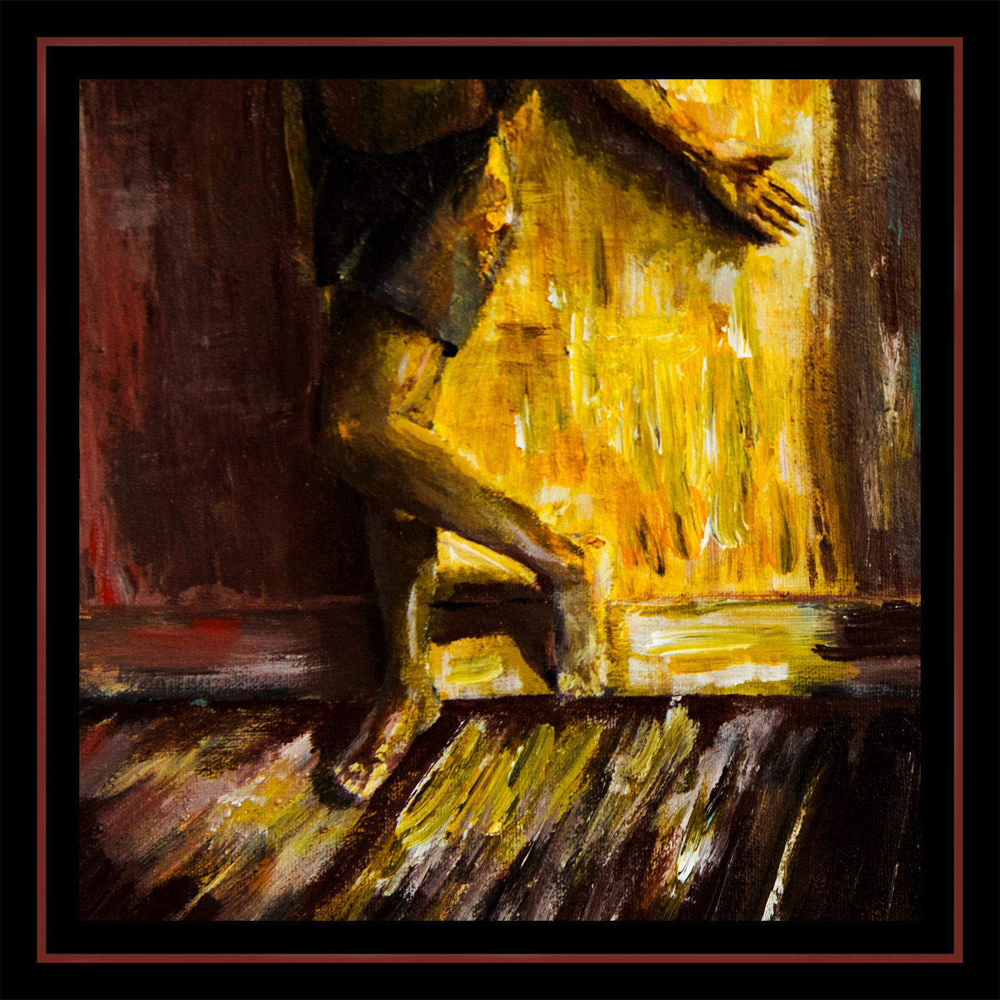

sciencevision - see you
catalog: ar-004
year: 2018
format: cassette
Formally released by Luau Records in the UK, with stateside copies made for shows. After leaning into the cold and synthetic side of psychedelic music on “Colorshifter” (released by Field Hymns), this is a more vibrant release with new age influence and also marks a return to a full band lineup. Limited to 20 copies through Astral Research, 50 through Luau Records.
1. washington
2. documentary
3. endless safety
4. can you love yourself?
5. grateful wetiko
6. solution space
7. dreamout
8. sister reason
9. continental staircase
2. documentary
3. endless safety
4. can you love yourself?
5. grateful wetiko
6. solution space
7. dreamout
8. sister reason
9. continental staircase
*** available from luau records ***